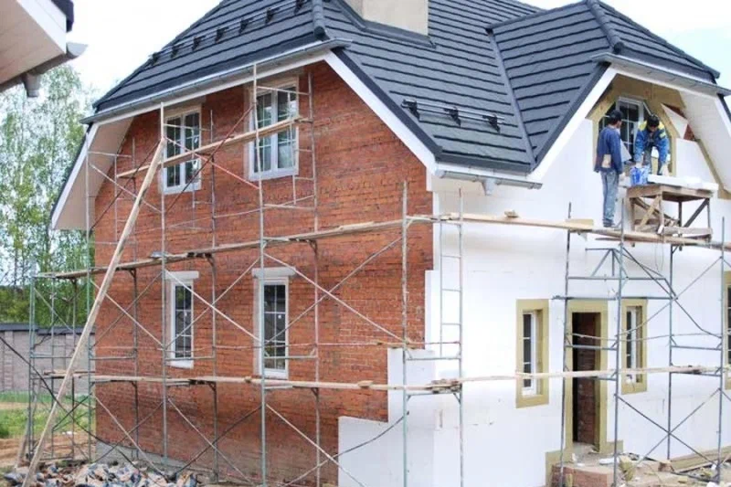

Утепление и отделка фасада
Фасадные работы в Калининграде
Выполняем фасадные работы для частных домов и коттеджей: утепление, мокрый фасад, облицовку и декоративную отделку с учетом климата Калининградской области.
- Утепление фасада
- Штукатурные системы
- Отделка частных домов
Какие фасадные работы выполняем

Что влияет на стоимость фасада
- Площадь стен и архитектурная сложность.
- Выбранная фасадная система и толщина утеплителя.
- Состояние основания и необходимость подготовки.
- Количество декоративных элементов и примыканий.
Когда заказывать фасадные работы
FAQ по фасадным работам
Да, возможны отдельные этапы: утепление, базовый слой или полная фасадная система под ключ.
Да, подбираем решение под бюджет, материал стен и требуемый внешний вид.
Да, основная специализация по фасадам у нас именно частные дома и коттеджи.
Нужно утеплить или отделать фасад
Подскажем по подходящей системе и подготовим предварительный расчет после описания площади и материала стен.
Контакты
Отправьте площадь фасада и материал стен, чтобы получить ориентир по стоимости.
+7(921)618-23-77- Telegram: @CKcaizer
- Email: kaizer.sk@yandex.ru